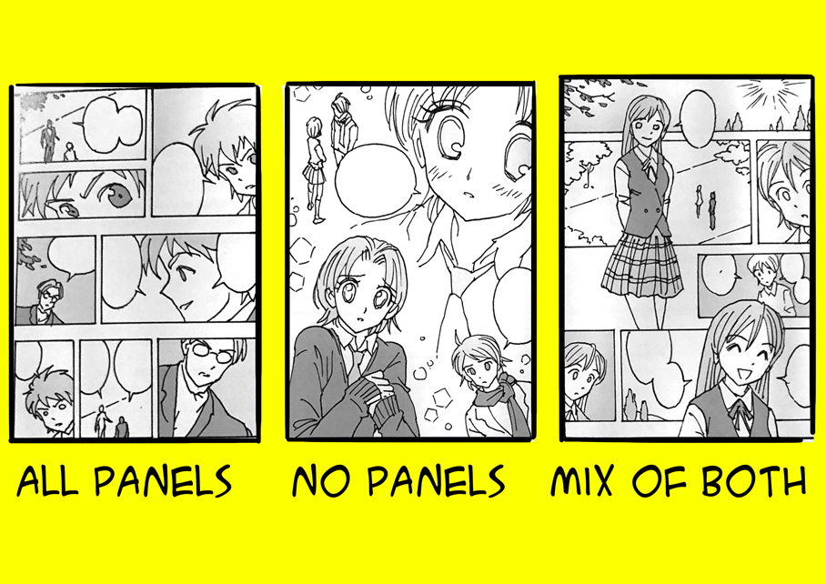
I PRESENT TO YOU – VOLUME 7!!
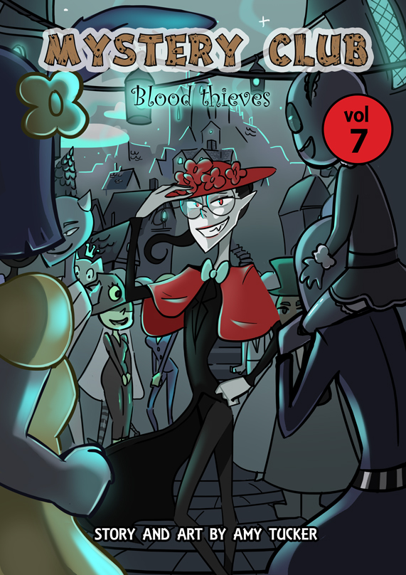
Here it is- finally the front cover of volume 7! I’ve working on volume 7 for so long now, trying to make the art the best it could be and now I’m finally done!
It’ll be available on my website www.mysteryclub.co.uk in the very near future so keep a look out!!
Amy 
The 5 main Stages of making a comic
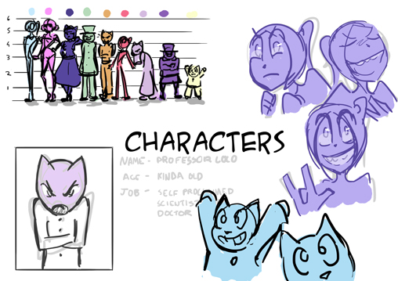 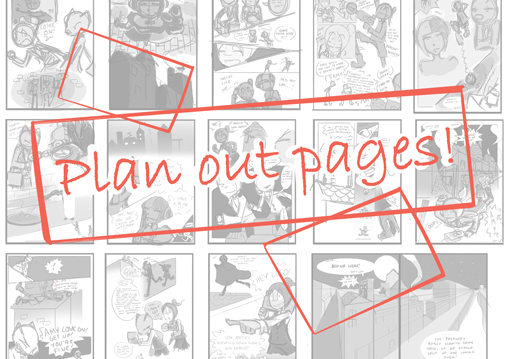 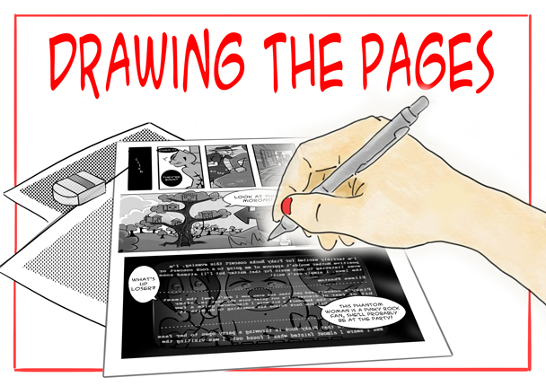
Buttercups
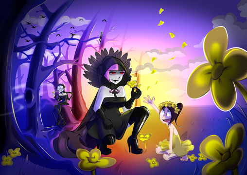
This is actually something I’ve been meaning to post for a while but I’ve been busy so I haven’t got round to it until now! I’m not going to explain the meaning of this illustration because oooooooh! Spoilers! Oh yeah, and these characters are from my comic Mystery Club.
I feel like this is one of those illustrations which is far quieter and nicer than the actual comics, it doesn’t really show the madness of the comics but that wasn’t really what I was trying capture.
See ya,
Amy
Travel
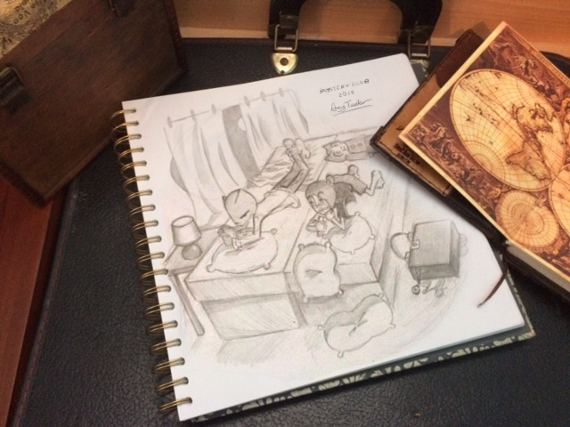
Here’s Amy, Professor Loco and Pooty travelling on the caterpillar bus which is just a travelling hotel in the shape of a caterpillar, I think when I came up with this I was quite inspired by Alice in Wonderland, it’s such a weird idea.
See ya in my next post! (hopefully…)
Amy
Relfie!
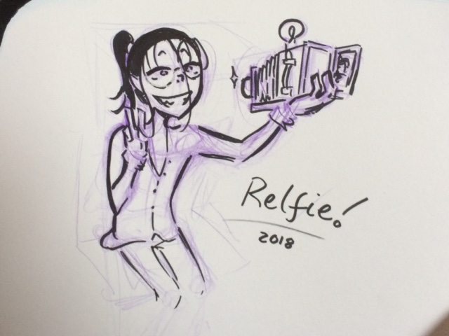
RELFIE!!!!!!!!!!!! COME EVERYONE LET’S TAKE A RELFIE!!! HEH! HEH!! HEH!!! RELFIE!!!!
By the way, in case you haven’t read my comic and you don’t get the joke then I’ll explain, the characters name is Relte and there is a thing called a selfie so I combined the two and the result was this!
Oh yeah and I was inspired by this….
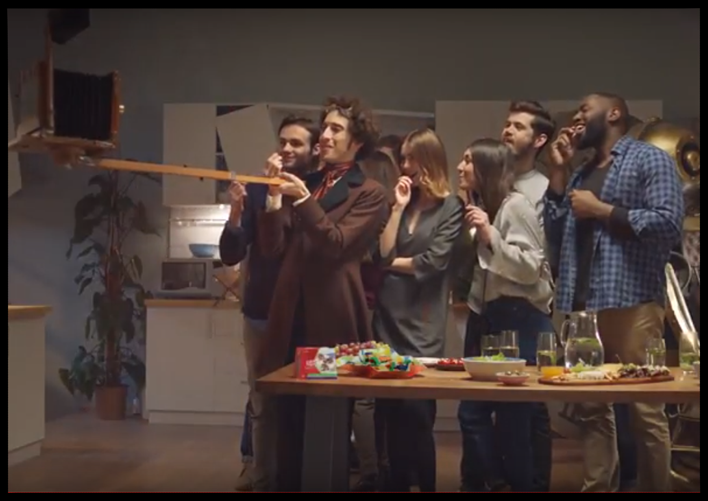
It’s from a Kit Cat advert, it just shows you that inspiration can strike at any time!
See ya!
Amy
Amy Holmes
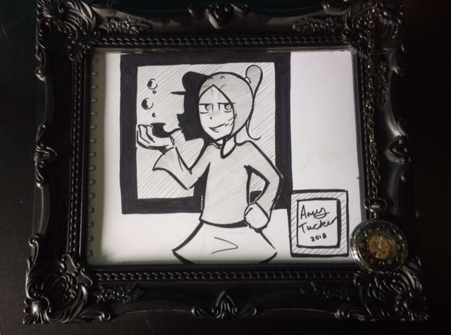
Here is Amy Holmes… Emmm… Sherlock Abnobotchi … Ehhh…Ok, it’s my character Amy Abnobotchi parodying Sherlock Holmes because sometimes you just just get an idea and have to draw it, do you know what I mean? DO YOU?!!
Amy
RELTe
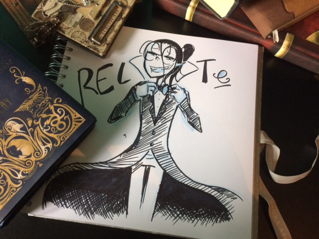
Another fancy little photo of a sketch look at the fancy books! LOOK AT THEM!
Can you guess what any of them are, if you’re a geek like me you probably can!
Oh, by the way the character in the picture is Relte and is from my comic Mystery Club spelt R , e , l , t and of course you can’t forget that e!
See ya in my next post.
Amy
www.mysteryclub.co.uk
Night Watch
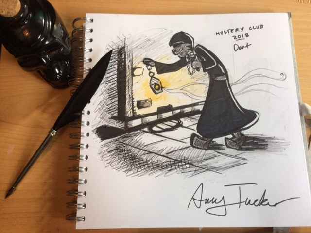
A good old sketch of Dart, a character from my comic Mystery Club.
I’m working on taking more ‘Mystery Club style’ photos for my blog so here we have one of them with a good ol’ skull bottle and feather! Look at my little feather pen isn’t it great! I’m building up a collection of Mystery Club style stuff to use for photos and just to display because who doesn’t like weird, creepy, Victorian stuff?!
Who?!!!
Amy
Heels ‘Cause Why Not?! (3)
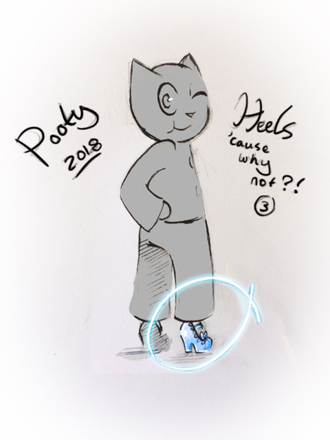
This is probably the final sketch of the “Heels ’cause why not” series but I might start doing more things like this in the future.
Every time I look at this one it makes me laugh, look at Pootys stupid smile, look at his tiny, little, tiny feet! LOOK AT THEM!!!
Amy